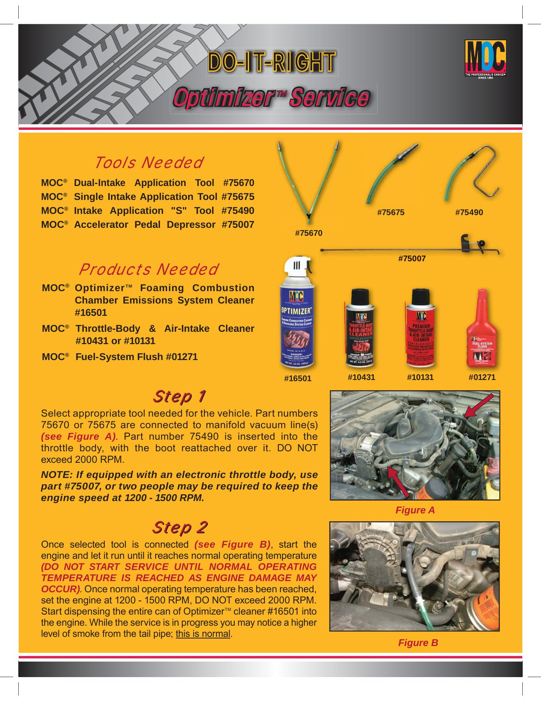
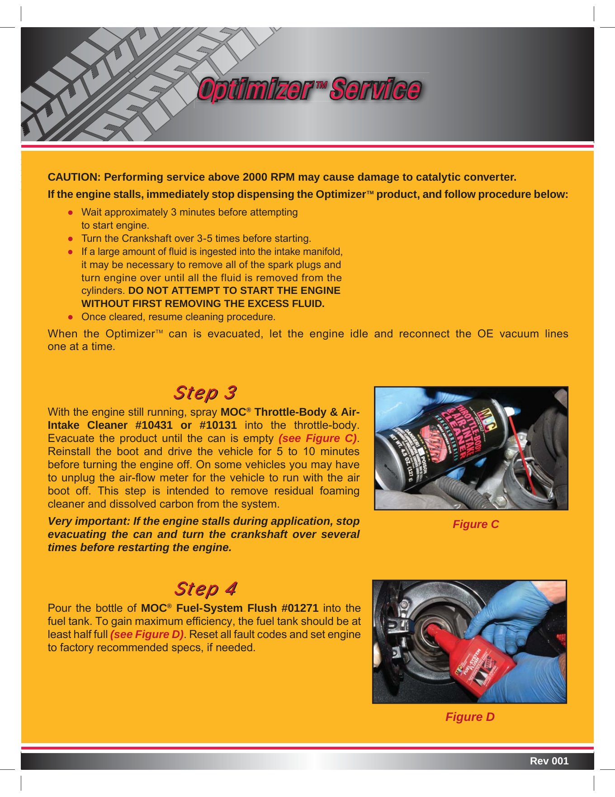
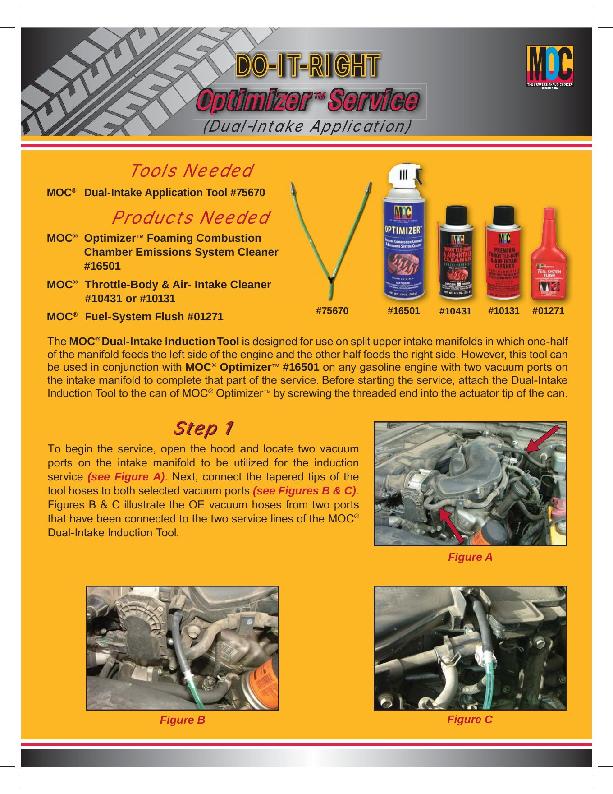
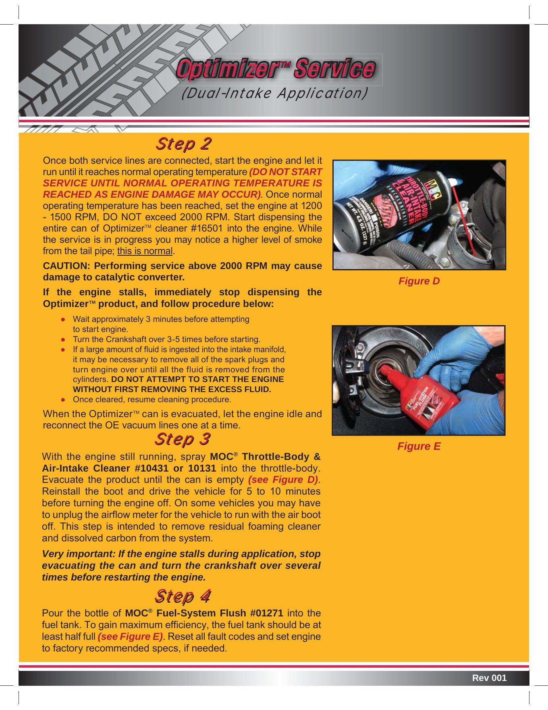

Doc no. MOC-TSB-12-09 // Vol. 12 No. 09 // Mar 22, 2012 // Fuel
Optimizer Service Procedure Revision
During recent in house testing we have found that performing Optimizer™ service on vehicles with the engine speed above 2000 RPM can result in excessive temperatures to be reached within Catalytic Converter. At these high temperatures it can cause internal damage to the Catalytic converter.
What's new
Our recommendation is that all Optimizer™ services be performed with the engine at 1200 -1500 RPM, and NOT to exceed 2000 RPM.
The Optimizer™ "Do It Rights" have been revised to reflect the above recommendations. Both "Do it Rights" are attached with this document. It is highly recommended that these Do It Rights are distributed to any accounts purchasing Optimizer™.
Please note part #83752 "Do it Right" booklet will be temporarily unavailable, until multiple updates are made.
Superseded by Vol. 12 No. 10 (April 26, 2012), which withdraws this RPM change: perform Optimizer services per the 16501 label and do not exceed 2000 RPM.
Contact
For more information, contact the Machine & Equipment Department at 866.244.6621.
Part numbers
| Part No. | Description | Notes |
|---|---|---|
| 83752 | Optimizer "Do It Right" booklet |
Original attachments
As issued with the bulletin; not redrawn.



